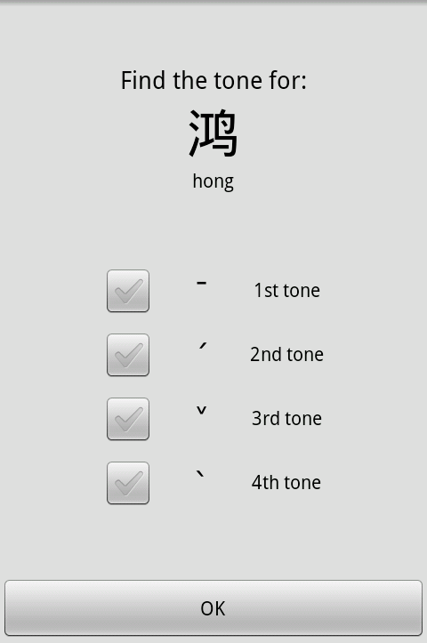

In this test, you are given one character and its pinyin form without the tone part. You need to select one or sometimes multiple tones that apply to that character / pinyin combination.
You can select the appropriate checkbox or draw the tone accent on the screen. Then click Submit.
